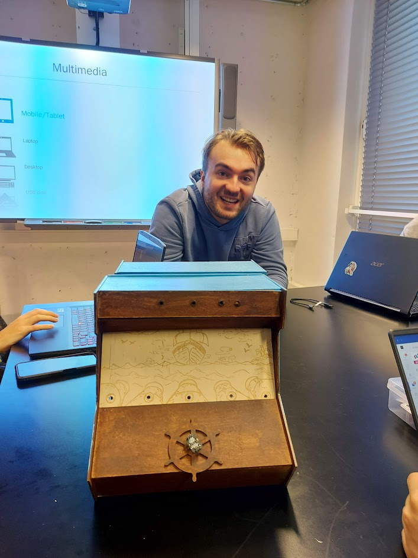
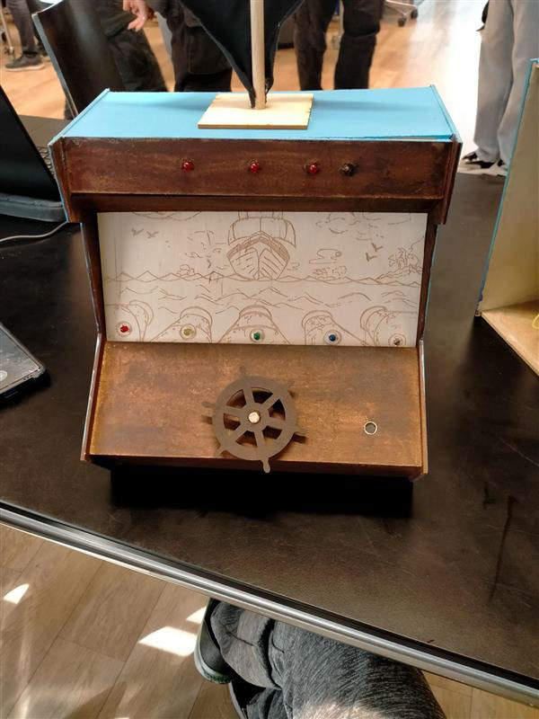

Sprint 2
Bij de tweede sprint kwamen de hele peerteam bij elkaar en kozen we voor de beste idee. Die idee hebben we uiteindelijk of gewerkt tot een echte arcademachine! Hiernaast zie je een voorbeeld van de eindproduct!

Sprint 3
Bij de laatste sprint hadden we maar een laatste doel: de eindproduct werkend maken. De een werkte aan de code, de andere werkte verder aan het ontwerp en zo hebben we een werkende arcade machine!
